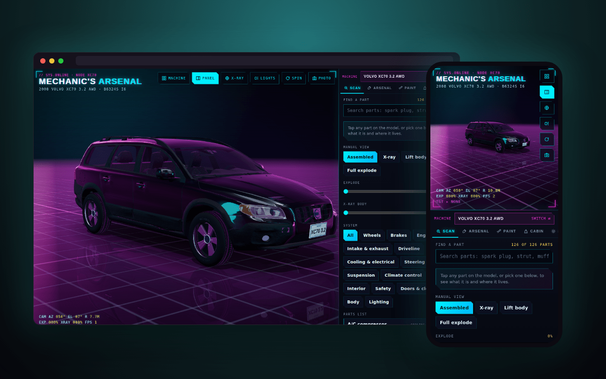

Machine picker
An index of everything in the arsenal, filtered by vehicles or industrial robots. Switch machines and every tab rebuilds around the new one.
Machines you can actually take apart. A 2008 Volvo with 126 cataloged parts, and a FANUC robot arm you can jog joint by joint — X-rayed, exploded and cited to the manual, in the browser.
Volvo XC70 · FANUC LR Mate 200iD · runs entirely in your browser

Working on a machine means constantly cross-referencing a manual's text against a mental model of where everything actually sits — which mount, which coupling, which cable runs through which joint. That translation is where mistakes happen. Mechanic's Arsenal replaces the mental model with a real one you can rotate, X-ray and pull apart part by part. It started with a 2008 Volvo XC70 in the driveway and now runs a second machine from the shop floor: a FANUC LR Mate 200iD industrial robot, the same controller family as the lathes in The Shop.
An index of everything in the arsenal, filtered by vehicles or industrial robots. Switch machines and every tab rebuilds around the new one.
Search or tap any cataloged part: 126 on the XC70 across engine, driveline, brakes, suspension, cooling, climate, audio, safety and body; 23 on the robot across base and J1, drives, arm, cabling, wrist, tooling, cell and controller. Each one says what it is and where it lives.
Fade the shell to see through it, or blow every part apart along its own axis to see how the assembly actually stacks.
(robot) — jog all six joints individually, nudge the tool point along X, Y and Z, snap to Home, Tool down, Reach, Stow and Wrist service poses, fit a gripper or vacuum cup, and run a teach-pendant-style pick-and-place program at any speed override — with a live tool-point readout and an honest OUT OF REACH when you ask for the impossible.
(robot) — switch between the 200iD, the 5-axis /7H, the long-reach /7L and the compact /4S, and mount the arm on a floor pedestal or inverted from the ceiling.
(car) — the tool you'd reach for to get each part off, plus exterior colour and interior trim to match the real car.
Six lighting environments from neon district to garage, and saved camera views down to a wrist close-up on the robot.
Reference specs with sources: torque, tire and ignition data from the XC70 workshop manual; payload, reach, repeatability and per-joint range and speed for every LR Mate variant, cited to FANUC's own data sheets and operator's manual.
Three.js, a scanned body for the car, a procedural arm built to FANUC's published link dimensions, and a from-scratch HUD — no configurator template, no off-the-shelf asset pack. An inverse-kinematics solver turns every Cartesian move into joint angles and checks them against each variant's real joint limits, so the tool-point readout is solved, not animated. The whole thing runs client-side: one HTML file, no server, no build step.
The XC70's body, cabin, lamps and chassis are modeled from the real car; its mechanical parts are placeholder shapes placed at their correct real-world location. The robot is a procedural model built to published dimensions, not FANUC CAD, and its motion is eased and scaled for the viewer rather than timed like the real R-30iB Mate controller. Every spec on the Data tab is reference only. Confirm torque values, joint limits and procedures against the factory manual for your specific VIN or serial before turning a wrench — or a teach pendant.
Built for the garage and the shop floor, not the showroom.
more in toolskeep scrolling · it opens right here